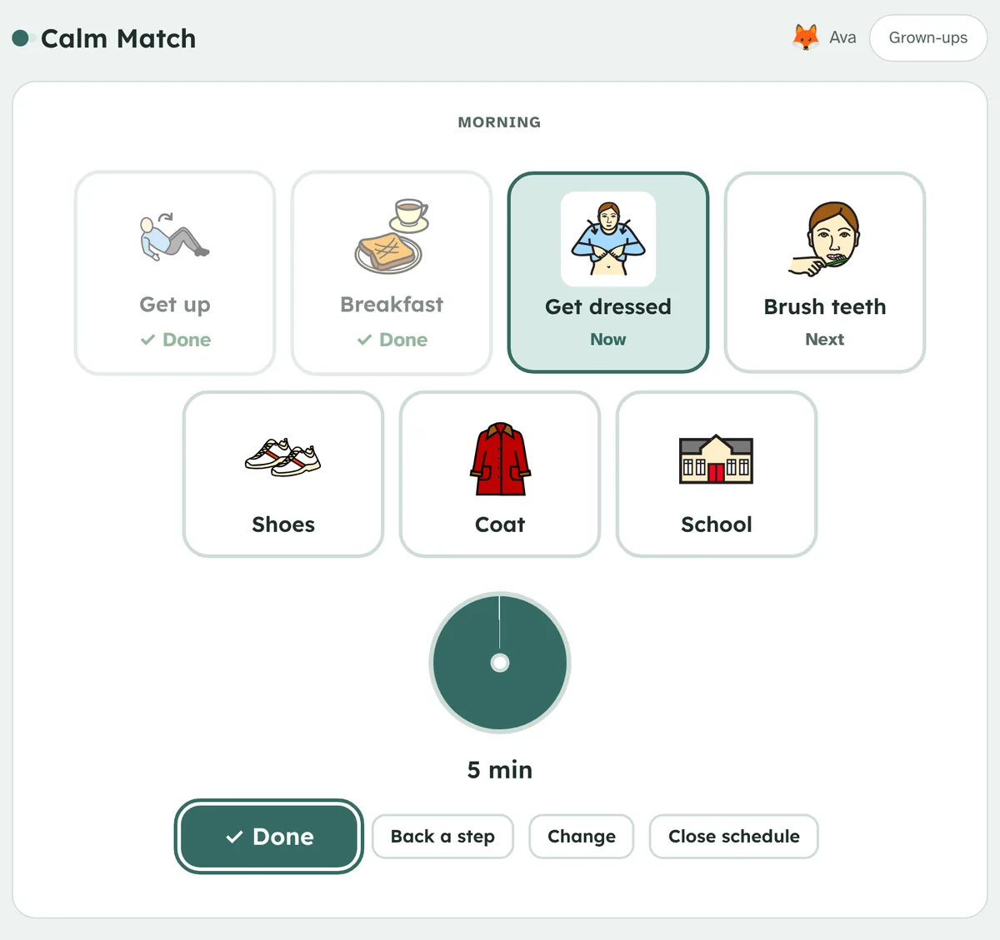

Free visual schedules
A picture schedule shows a child what is happening now, what comes next, and when it is all done. Make one in a few minutes on a tablet, phone or computer, in English or Irish. Free, with no sign-up.

What your child sees
- Every step in order, each with a picture and a word. The step they are on says Now, and the one after it says Next.
- They tap Done to move on. Finished steps stay on the screen with a tick.
- A step can have its own timer, from 1 to 30 minutes. It shows as a circle that shrinks as time passes, so a child doesn't need to read numbers.
- Each step can be read aloud. You can also record a step in your own voice.
- When plans change, the Change button swaps a step for today only, and tells your child what is different. The saved schedule stays the same.
- A step can open a picture story or a how-to, like washing hands.
- If you use the token board, each step done earns a token. Tokens are never taken away.
Making a schedule
- Up to 20 steps in a schedule, and up to 12 schedules for each child: morning, school, bedtime, swimming, and so on.
- Pick the days each schedule is for. On those days, the "My day" button on your child's start screen opens it.
- Use everyday pictures, more than 200 symbols, or your own photos: your child's school, their teacher, the swimming pool.
- Print any schedule as numbered picture cards for the wall or the fridge.
More visual supports in the same place
- First and Then board: "First this, then that", full-size, with an optional timer for the first part.
- Visual timer: a coloured circle that shrinks as time passes, with a soft tone at the end. You choose whether timers make any sound.
- Token board: a token for each game finished and each schedule step done, and a reward you pick when the board is full.
How to start
- Open Calm Match. You don't need an account.
- Open the Grown-ups area with the Grown-ups button at the top of the screen.
- Go to Make, then Schedules and timer.
- Add steps, give the schedule a name, then press "Show this schedule".
In Irish
When a child's language is set to Irish, their schedule is in Irish too: the step names, the buttons, and "Anois" and "Ar aghaidh" for Now and Next. Read-aloud in Irish needs an Irish voice on the device. Most devices don't have one, so read-aloud stays silent rather than mispronounce words. You can record each step in your own voice instead.
Private
Schedules, your photos and your recordings stay on your device. They are never sent to us, even if you make a parent account. Read the privacy policy.
More from Calm Match
- Free printable talk cards in English and Irish.
- For schools and autism classes: one shared tablet for a small class.